library(COTAN)
library(data.table)
library(Matrix)
library(ggrepel)
#> Loading required package: ggplot2
#library(latex2exp)mycolours <- c("A" = "#8491B4B2","B"="#E64B35FF")
my_theme = theme(axis.text.x = element_text(size = 14, angle = 0, hjust = .5, vjust = .5, face = "plain", colour ="#3C5488FF" ),
axis.text.y = element_text( size = 14, angle = 0, hjust = 0, vjust = .5, face = "plain", colour ="#3C5488FF"),
axis.title.x = element_text( size = 14, angle = 0, hjust = .5, vjust = 0, face = "plain", colour ="#3C5488FF"),
axis.title.y = element_text( size = 14, angle = 90, hjust = .5, vjust = .5, face = "plain", colour ="#3C5488FF"))Download the dataset for mouse cortex P0.
data = as.data.frame(fread(paste(data_dir,"GSE123335_P0_combined_matrix.txt.gz", sep = "/")))
data = as.data.frame(data)
rownames(data) = data$Gene
data = data[,2:ncol(data)]
data[1:10,1:10]Define a directory where the ouput will be stored.
Inizialise the COTAN object with the row count table and the metadata for the experiment.
obj = new("scCOTAN",raw = data)
obj = initRaw(obj,GEO="GSE123335" ,sc.method="10X",cond = "mouse cortex P0")
#> [1] "Initializing S4 object"Now we can start the cleaning. Analysis requires and starts from a matrix of raw UMI counts after removing possible cell doublets or multiplets and low quality or dying cells (with too high mtRNA percentage, easily done with Seurat or other tools).
If we do not want to consider the mithocondrial genes we can remove them before starting the analysis.
genes_to_rem = rownames(obj@raw[grep('^mt', rownames(obj@raw)),]) #genes to remove : mithocondrial
obj@raw = obj@raw[!rownames(obj@raw) %in% genes_to_rem,]
cells_to_rem = colnames(obj@raw[which(colSums(obj@raw) == 0)])
obj@raw = obj@raw[,!colnames(obj@raw) %in% cells_to_rem]We want also to define a prefix to identify the sample.
First we create the directory to store all information regardin the data cleaning.
if(!file.exists(out_dir)){
dir.create(file.path(out_dir))
}
if(!file.exists(paste(out_dir,"cleaning", sep = ""))){
dir.create(file.path(out_dir, "cleaning"))
}ttm = clean(obj)
#> [1] "Start estimation mu with linear method"
#> [1] 14438 7688
#> rowname p0-WT2_ACGAGCGATAGA p0-WT2_CAATCAGTTCAT p0-WT2_CAGTACCACATA
#> 8624 Npy 269.054089 260.832176 420.693732
#> 12065 Sst 102.371800 78.642867 102.935700
#> 13263 Tuba1a 18.374426 9.175001 19.393683
#> 7440 Malat1 36.748851 0.000000 1.491822
#> 8551 Nnat 26.249179 18.350002 17.901861
#> 7679 Meg3 26.249179 3.932143 0.000000
#> 847 Actb 22.311802 13.107145 10.442752
#> 2115 Calm1 6.562295 7.864287 13.426396
#> 9101 Pcp4 0.000000 6.553572 5.967287
#> 6352 Hsp90ab1 6.562295 19.660717 5.967287
#> 10893 Rtn1 11.812131 22.282146 4.475465
#> 4921 Gap43 5.249836 7.864287 11.934574
#> 5762 Gnas 1.312459 11.796430 13.426396
#> 7530 Mapt 5.249836 5.242858 13.426396
#> 12890 Tmsb4x 7.874754 1.310714 4.475465
#> p0-WT2_TCAGCCAGGCAT p0-WT3_ACCAATCGACAG p0-WT3_ATCTCTTGCTGG
#> 8624 165.023143 198.814905 158.297051
#> 12065 87.365193 46.841208 47.659327
#> 13263 53.389840 11.450073 25.531782
#> 7440 0.000000 31.227472 6.808475
#> 8551 26.694920 14.572820 11.914832
#> 7679 0.000000 12.490989 0.000000
#> 847 24.268109 15.613736 8.510594
#> 2115 12.134055 6.245494 18.723307
#> 9101 19.414487 16.654652 0.000000
#> 6352 4.853622 7.286410 13.616951
#> 10893 7.280433 5.204579 6.808475
#> 4921 4.853622 13.531905 17.021188
#> 5762 4.853622 10.409157 6.808475
#> 7530 4.853622 3.122747 11.914832
#> 12890 9.707244 1.040916 15.319069
#> p0-WT3_GGATTGACAGGA p0-WT3_GTGAGATTCGAA p0-WT3_TACCGATCAAAG
#> 8624 227.695969 89.091134 194.188936
#> 12065 72.368486 189.604208 41.316795
#> 13263 12.355595 31.981433 26.167303
#> 7440 1.765085 41.118985 13.772265
#> 8551 24.711190 15.990716 15.149491
#> 7679 0.000000 38.834597 20.658397
#> 847 10.590510 9.137552 22.035624
#> 2115 3.530170 18.275104 15.149491
#> 9101 17.650850 4.568776 19.281171
#> 6352 7.060340 4.568776 12.395038
#> 10893 5.295255 4.568776 8.263359
#> 4921 8.825425 0.000000 5.508906
#> 5762 5.295255 15.990716 4.131679
#> 7530 7.060340 2.284388 5.508906
#> 12890 8.825425 2.284388 0.000000
#> p0-WT3_TGAGGAATGAGA p0-WT4_CCGCAAAGCACT p0-WT4_TCCTTTAACCTT
#> 8624 240.738358 175.421286 162.138055
#> 12065 78.379930 57.861471 58.467965
#> 13263 13.436560 25.716209 16.213806
#> 7440 23.513979 16.531849 37.340885
#> 8551 8.957706 33.063698 20.144425
#> 7679 15.675986 20.205593 21.127080
#> 847 10.077420 11.021233 9.335221
#> 2115 12.316846 3.673744 3.930620
#> 9101 2.239427 6.429052 4.913274
#> 6352 10.077420 5.510616 1.965310
#> 10893 6.718280 8.265924 10.809204
#> 4921 7.837993 5.510616 8.843894
#> 5762 2.239427 1.836872 5.404602
#> 7530 4.478853 8.265924 3.439292
#> 12890 5.598566 13.776541 9.335221
#> p0-WT4_TCGTGGTCGTCA
#> 8624 260.0206889
#> 12065 65.6617901
#> 13263 14.8833391
#> 7440 59.5333564
#> 8551 14.0078486
#> 7679 38.5215835
#> 847 2.6264716
#> 2115 6.1284337
#> 9101 12.2568675
#> 6352 13.1323580
#> 10893 10.5058864
#> 4921 6.1284337
#> 5762 3.5019621
#> 7530 6.1284337
#> 12890 0.8754905
obj = ttm$object
ttm$pca.cell.2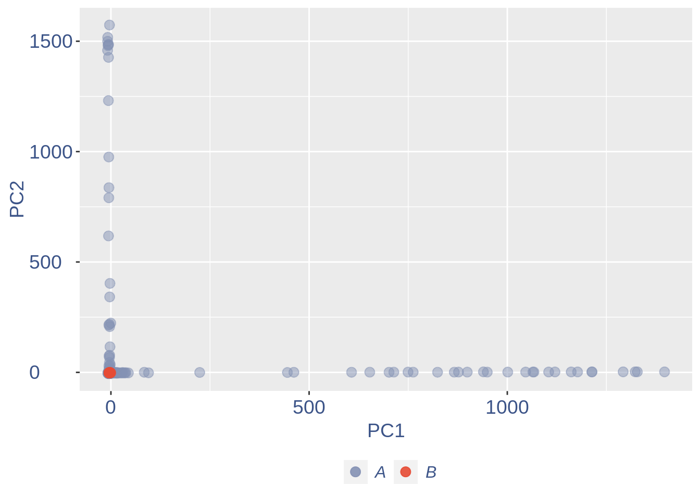
Run this when B cells need to be removed.
pdf(paste(out_dir,"cleaning/",t,"_",n_it,"_plots_before_cells_exlusion.pdf", sep = ""))
ttm$pca.cell.2
ggplot(ttm$D, aes(x=n,y=means)) + geom_point() +
geom_text_repel(data=subset(ttm$D, n > (max(ttm$D$n)- 15) ), aes(n,means,label=rownames(ttm$D[ttm$D$n > (max(ttm$D$n)- 15),])),
nudge_y = 0.05,
nudge_x = 0.05,
direction = "x",
angle = 90,
vjust = 0,
segment.size = 0.2)+
ggtitle("B cell group genes mean expression")+my_theme +
theme(plot.title = element_text(color = "#3C5488FF", size = 20, face = "italic",vjust = - 5,hjust = 0.02 ))
#> Warning: ggrepel: 13 unlabeled data points (too many overlaps). Consider
#> increasing max.overlaps
dev.off()
#> png
#> 2
if (length(ttm$cl1) < length(ttm$cl2)) {
to_rem = ttm$cl1
}else{
to_rem = ttm$cl2
}
n_it = n_it+1
obj@raw = obj@raw[,!colnames(obj@raw) %in% to_rem]
#obj@raw = obj@raw[rownames(obj@raw) %in% rownames(cells),colnames(obj@raw) %in% colnames(cells)]
gc()
#> used (Mb) gc trigger (Mb) max used (Mb)
#> Ncells 3753459 200.5 6224495 332.5 6224495 332.5
#> Vcells 739732667 5643.8 1214347887 9264.8 1011885523 7720.1
ttm = clean(obj)
#> [1] "Start estimation mu with linear method"
#> [1] 14433 7675
#> rowname p0-WT2_ACCGCAGAGGGC p0-WT2_CCCTAACCCCAT p0-WT2_CGGTCGTACACT
#> 6103 Hbb-bs 1510.26571 1360.067486 598.326652
#> 6104 Hbb-bt 304.31935 421.429362 127.944064
#> 6101 Hba-a1 335.07503 354.947190 110.383114
#> 6102 Hba-a2 168.34687 233.251010 66.480739
#> 5912 Gpx1 50.18032 3.380449 3.763061
#> 7439 Malat1 3.23744 1.126816 46.411082
#> 1071 Alas2 17.80592 11.268165 2.508707
#> 4804 Fth1 8.09360 5.634082 5.017414
#> 8927 Pabpc1 19.42464 0.000000 0.000000
#> 13259 Tuba1a 1.61872 0.000000 20.069657
#> 847 Actb 3.23744 0.000000 17.560950
#> 1930 Bpgm 4.85616 3.380449 2.508707
#> 7836 Mkrn1 8.09360 1.126816 0.000000
#> 11747 Snca 3.23744 5.634082 1.254354
#> 12887 Tmsb4x 0.00000 1.126816 7.526121
#> p0-WT2_CTACTTGCCCGT p0-WT2_TCACGACGTTTN p0-WT2_TTACGACTCGAN
#> 6103 919.7849387 1393.879227 1376.342017
#> 6104 215.7520227 278.300119 406.908486
#> 6101 223.3222691 271.164218 352.730869
#> 6102 139.1032778 259.271051 263.971794
#> 5912 16.0867736 9.514534 20.748875
#> 7439 77.5950257 0.000000 0.000000
#> 1071 2.8388424 16.650434 18.443444
#> 4804 4.7314040 2.378633 2.305431
#> 8927 3.7851232 4.757267 1.152715
#> 13259 7.5702464 7.135900 5.763576
#> 847 3.7851232 2.378633 3.458146
#> 1930 2.8388424 4.757267 3.458146
#> 7836 0.9462808 0.000000 2.305431
#> 11747 1.8925616 2.378633 4.610861
#> 12887 0.9462808 4.757267 3.458146
#> p0-WT3_AGAGGTGCTAGT p0-WT3_CTCCTAACGGAC p0-WT4_CAATACCGTAAC
#> 6103 1347.979875 1093.5829767 726.090046
#> 6104 467.299690 391.0924276 224.548702
#> 6101 464.031860 334.2733390 200.173349
#> 6102 266.328145 254.5790330 108.581116
#> 5912 6.535660 25.0889482 2.954588
#> 7439 0.000000 25.0889482 1.477294
#> 1071 8.169575 9.5928331 8.125118
#> 4804 8.169575 16.9719355 5.909176
#> 8927 0.000000 19.9235765 1.477294
#> 13259 1.633915 0.7379102 14.034294
#> 847 1.633915 4.4274614 14.772941
#> 1930 1.633915 10.3307434 0.000000
#> 7836 3.267830 12.5444741 2.954588
#> 11747 4.901745 0.0000000 2.954588
#> 12887 1.633915 2.9516410 8.125118
#> p0-WT4_CTGAGTAACTTT p0-WT4_GCGGGCCTCTCG p0-WT4_GGACCACCATGA
#> 6103 1313.4473803 784.999535 1256.898569
#> 6104 543.8199039 192.967158 545.398085
#> 6101 332.1253046 187.258071 347.616362
#> 6102 286.0229252 127.312652 250.865995
#> 5912 5.6451893 3.425453 29.110730
#> 7439 0.9408649 11.418175 0.000000
#> 1071 12.2312435 5.138179 17.123959
#> 4804 7.5269191 16.556354 7.705781
#> 8927 5.6451893 5.709088 9.418177
#> 13259 1.8817298 2.854544 4.280990
#> 847 0.9408649 6.279996 3.424792
#> 1930 0.9408649 3.425453 11.130573
#> 7836 1.8817298 3.425453 10.274375
#> 11747 1.8817298 1.141818 11.986771
#> 12887 3.7634595 10.276358 3.424792
#> p0-WT4_TTGAAACTTTTC
#> 6103 1332.664320
#> 6104 502.117599
#> 6101 353.692900
#> 6102 254.743101
#> 5912 5.263287
#> 7439 4.210630
#> 1071 8.421260
#> 4804 10.526574
#> 8927 4.210630
#> 13259 2.105315
#> 847 5.263287
#> 1930 2.105315
#> 7836 4.210630
#> 11747 6.315945
#> 12887 0.000000
#ttm = clean.sqrt(obj, cells)
obj = ttm$object
ttm$pca.cell.2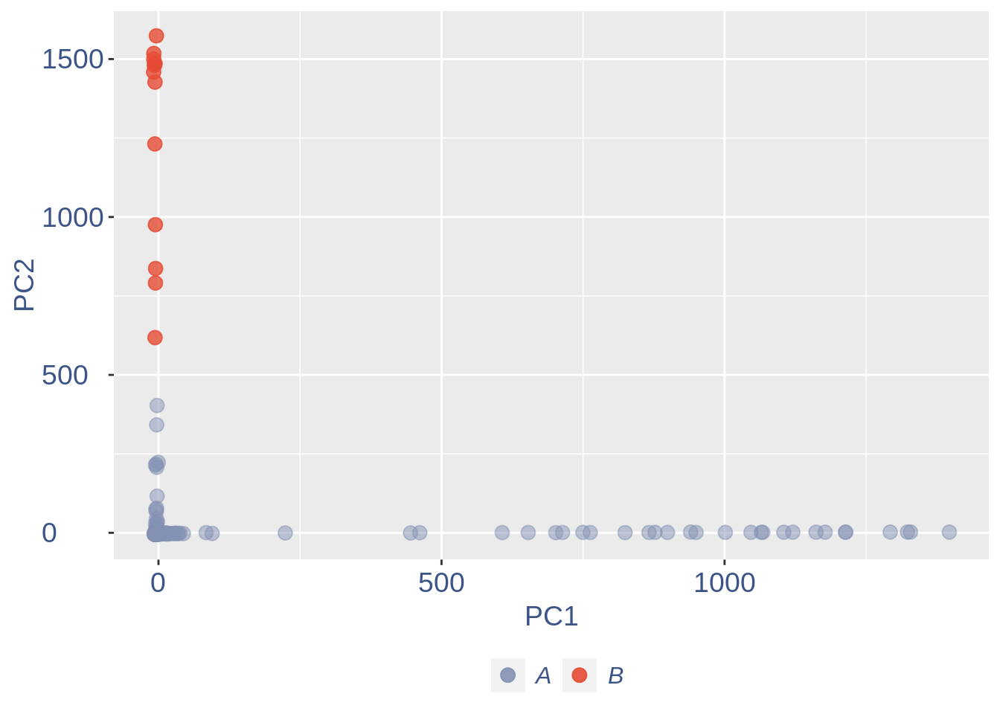
#> Warning: ggrepel: 11 unlabeled data points (too many overlaps). Consider
#> increasing max.overlaps
#> png
#> 2
#> used (Mb) gc trigger (Mb) max used (Mb)
#> Ncells 3754505 200.6 6224495 332.5 6224495 332.5
#> Vcells 758189641 5784.6 1748836956 13342.6 1748832979 13342.6
#> [1] "Start estimation mu with linear method"
#> [1] 14432 7662
#> rowname p0-WT2_AAGAAAGACTCN p0-WT2_AAGAATAGACTC p0-WT2_ACGCTTAGATCT
#> 13254 Ttr 1217.302279 1123.775923 752.020748
#> 7439 Malat1 0.000000 2.493586 32.621023
#> 62 1500015O10Rik 11.226767 14.130319 18.337262
#> 1294 Apoe 0.000000 6.649562 21.811690
#> 6477 Igfbp2 16.038238 9.974343 9.651190
#> 1971 Bsg 14.434414 9.974343 11.002357
#> 1413 Arl6ip1 17.642062 14.130319 13.511666
#> 847 Actb 12.830591 20.779880 9.844214
#> 4804 Fth1 20.849710 18.286295 7.913976
#> 3142 Cst3 9.622943 7.480757 8.493047
#> 2817 Clu 1.603824 3.324781 5.983738
#> 3000 Cox4i1 4.811471 7.480757 4.439548
#> 11905 Sparc 1.603824 4.155976 9.651190
#> 5761 Gnas 11.226767 3.324781 3.281405
#> 4138 Enpp2 0.000000 2.493586 11.967476
#> p0-WT2_ACGTTCCCCGTC p0-WT2_ATCCACGGAGCN p0-WT2_ATTAGGGTCAAG
#> 13254 764.941504 952.234482 901.949597
#> 7439 23.131518 29.243285 23.358501
#> 62 17.081736 14.621643 8.097614
#> 1294 18.861084 31.070991 22.424161
#> 6477 16.725867 18.277053 6.228934
#> 1971 16.014128 14.621643 11.523527
#> 1413 9.252607 10.966232 15.260888
#> 847 5.338043 7.310821 11.212081
#> 4804 9.786411 3.655411 5.917487
#> 3142 4.982173 12.793937 6.851827
#> 2817 10.142281 0.000000 5.294594
#> 3000 5.160108 16.449348 5.606040
#> 11905 7.651194 1.827705 11.212081
#> 5761 6.049782 1.827705 2.180127
#> 4138 6.405651 1.827705 5.917487
#> p0-WT2_GTCATTCCTCTC p0-WT2_GTCTTATTAGTA p0-WT2_TTAATAGAATCT
#> 13254 869.287587 1164.869643 704.390419
#> 7439 41.957614 15.891810 36.911288
#> 62 10.199641 7.945905 30.759407
#> 1294 8.345161 6.356724 9.227822
#> 6477 13.676791 14.302629 6.151881
#> 1971 14.835841 11.124267 1.537970
#> 1413 7.417921 9.535086 12.303763
#> 847 6.490681 7.945905 6.151881
#> 4804 6.722491 11.124267 3.075941
#> 3142 7.417921 7.945905 0.000000
#> 2817 12.054121 9.535086 9.227822
#> 3000 4.172580 6.356724 12.303763
#> 11905 13.444981 3.178362 1.537970
#> 5761 3.940770 4.767543 4.613911
#> 4138 6.258871 6.356724 16.917674
#> p0-WT3_AAATCTGCTGGA p0-WT3_AAGTAATAGCAC p0-WT3_AATAGCCGGATG
#> 13254 1070.650373 1107.917463 1217.527817
#> 7439 13.917776 21.452791 0.000000
#> 62 14.936150 10.488031 10.274496
#> 1294 7.468075 8.581116 2.568624
#> 6477 7.128617 12.394946 10.274496
#> 1971 9.165365 11.441488 2.568624
#> 1413 13.238860 11.441488 2.568624
#> 847 11.202112 8.104388 12.843120
#> 4804 8.825907 3.813829 2.568624
#> 3142 8.146991 9.534574 7.705872
#> 2817 7.807533 4.290558 2.568624
#> 3000 6.789159 7.150930 7.705872
#> 11905 3.734037 6.197473 2.568624
#> 5761 6.449701 5.720744 5.137248
#> 4138 4.412953 7.627659 2.568624
#> p0-WT3_AGTAAATGCCGG p0-WT3_CTTTTCAATATG p0-WT3_GACGTTCCCGCA
#> 13254 1067.929605 1331.918004 609.055540
#> 7439 25.175972 1.716389 20.954534
#> 62 14.637193 1.716389 30.916525
#> 1294 22.248533 17.163892 21.641567
#> 6477 5.854877 8.581946 15.458262
#> 1971 8.196828 15.447503 11.679576
#> 1413 7.025853 6.865557 16.488813
#> 847 4.098414 10.298335 5.839788
#> 4804 8.196828 5.149168 8.931441
#> 3142 2.341951 6.865557 8.587924
#> 2817 7.611340 6.865557 17.519364
#> 3000 2.341951 5.149168 4.122203
#> 11905 8.782316 3.432778 18.206398
#> 5761 5.269389 5.149168 8.244407
#> 4138 6.440365 1.716389 5.496271
#> p0-WT3_GCGTTGTAGCAG p0-WT3_TCTGGCCGCACT p0-WT3_TGGGCGTTCCCG
#> 13254 1326.094995 1049.745426 943.212474
#> 7439 0.000000 34.982260 23.031932
#> 62 15.343248 11.938390 3.290276
#> 1294 13.151355 6.663288 18.644898
#> 6477 26.302711 11.660753 12.064346
#> 1971 10.959463 12.216027 9.870828
#> 1413 8.767570 7.773835 9.870828
#> 847 4.383785 6.940925 10.967587
#> 4804 4.383785 6.663288 6.580552
#> 3142 0.000000 8.606746 10.967587
#> 2817 4.383785 5.275103 6.580552
#> 3000 4.383785 7.496198 4.387035
#> 11905 2.191893 3.054007 1.096759
#> 5761 13.151355 5.830377 5.483793
#> 4138 4.383785 8.051472 13.161104
#> p0-WT3_TTAGGCTTCCCG p0-WT4_CCCATACTGTAG p0-WT4_GCGACGGATATT
#> 13254 1401.048190 1296.302791 879.780671
#> 7439 33.450186 1.893795 25.312508
#> 62 10.292365 10.415873 17.559127
#> 1294 5.146183 3.787590 17.787168
#> 6477 14.152002 11.362771 11.630071
#> 1971 9.005819 7.575181 12.314193
#> 1413 9.005819 9.468976 12.770274
#> 847 11.578911 6.628283 4.104731
#> 4804 3.859637 4.734488 7.297299
#> 3142 5.146183 5.681385 4.788853
#> 2817 6.432728 5.681385 10.033787
#> 3000 0.000000 4.734488 8.209462
#> 11905 6.432728 6.628283 6.841218
#> 5761 3.859637 3.787590 4.788853
#> 4138 1.286546 2.840693 3.876690
#> p0-WT4_TCCAAAGTTGAG p0-WT4_TCCGGAGGGTCC p0-WT4_TCGGAACGGTCC
#> 13254 1004.460920 1180.578131 827.202477
#> 7439 22.938410 20.872100 46.918349
#> 62 14.487417 13.045062 10.929843
#> 1294 15.694702 28.699137 12.262750
#> 6477 10.865563 16.088910 11.463006
#> 1971 12.072848 16.523745 9.330353
#> 1413 7.243709 7.392202 4.265304
#> 847 4.829139 2.609012 5.864794
#> 4804 3.621854 6.522531 6.931120
#> 3142 13.280132 8.696708 5.864794
#> 2817 4.829139 8.696708 11.996169
#> 3000 9.658278 5.652860 3.465560
#> 11905 4.829139 10.001214 8.264027
#> 5761 8.450993 5.218025 5.331631
#> 4138 4.829139 6.087696 2.665815
#> p0-WT4_TGTATAGGAAAG p0-WT4_TTGTTTTGCACG
#> 13254 655.456794 716.143243
#> 7439 19.988266 17.691844
#> 62 18.009230 12.610144
#> 1294 3.760169 8.281288
#> 6477 13.259543 14.304044
#> 1971 9.499374 13.739410
#> 1413 16.623904 15.997944
#> 847 9.301470 3.387800
#> 4804 8.114048 7.716655
#> 3142 4.749687 7.904866
#> 2817 6.926627 6.210966
#> 3000 6.728723 7.904866
#> 11905 5.145494 5.269911
#> 5761 5.739205 6.210966
#> 4138 8.311952 2.823167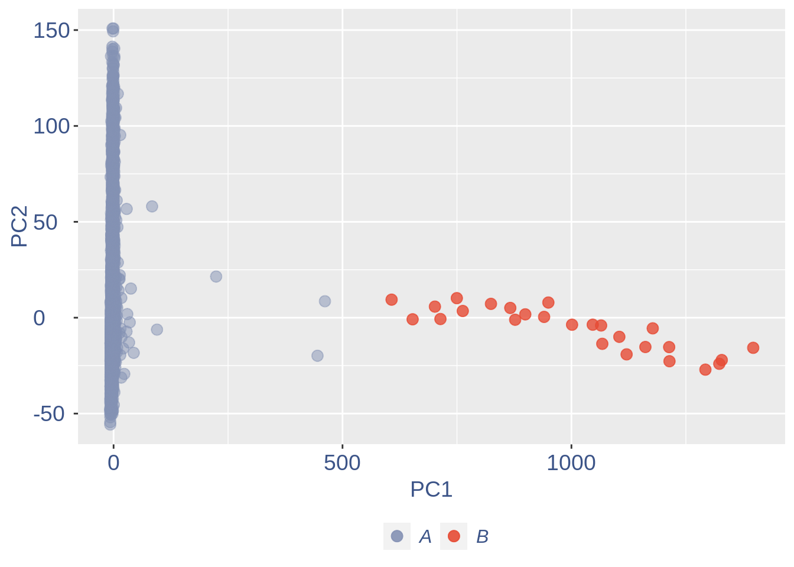
#> Warning: ggrepel: 14 unlabeled data points (too many overlaps). Consider
#> increasing max.overlaps
#> png
#> 2
#> used (Mb) gc trigger (Mb) max used (Mb)
#> Ncells 3754790 200.6 6224495 332.5 6224495 332.5
#> Vcells 757358929 5778.2 2098684347 16011.7 2098677190 16011.7
#> [1] "Start estimation mu with linear method"
#> [1] 14387 7636
#> rowname p0-WT4_CGTAAACCCAGC
#> 7649 Meg3 282.81485
#> 7410 Malat1 210.09103
#> 11714 Snhg11 56.56297
#> 11815 Son 16.16085
#> 1938 Brd8 12.12064
#> 2560 Celf4 12.12064
#> 2804 Clta 12.12064
#> 4711 Fnbp1l 12.12064
#> 6330 Hsp90b1 12.12064
#> 6891 Kif5c 12.12064
#> 7442 Map2 12.12064
#> 8520 Nnat 12.12064
#> 10856 Rtn1 12.12064
#> 11988 Srrm2 12.12064
#> 13216 Tuba1a 12.12064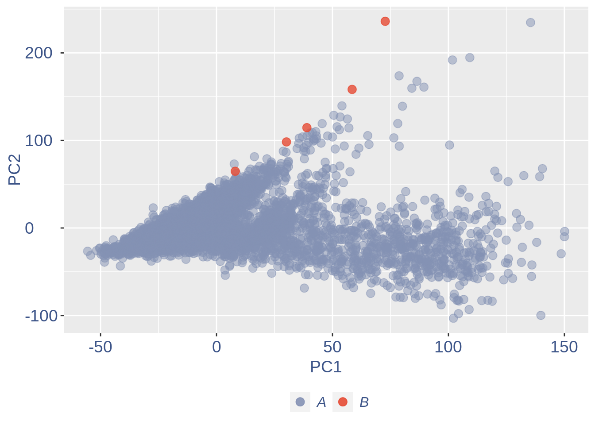
Run this only in the last iteration, instead the previus code, when B cells group has not to be removed
pdf(paste(out_dir,"cleaning/",t,"_",n_it,"_plots_before_cells_exlusion.pdf", sep = ""))
ttm$pca.cell.2
ggplot(ttm$D, aes(x=n,y=means)) + geom_point() +
geom_text_repel(data=subset(ttm$D, n > (max(ttm$D$n)- 15) ), aes(n,means,label=rownames(ttm$D[ttm$D$n > (max(ttm$D$n)- 15),])),
nudge_y = 0.05,
nudge_x = 0.05,
direction = "x",
angle = 90,
vjust = 0,
segment.size = 0.2)+
ggtitle(label = "B cell group genes mean expression", subtitle = " - B group NOT removed -")+my_theme +
theme(plot.title = element_text(color = "#3C5488FF", size = 20, face = "italic",vjust = - 10,hjust = 0.02 ),
plot.subtitle = element_text(color = "darkred",vjust = - 15,hjust = 0.01 ))
#> Warning: ggrepel: 12 unlabeled data points (too many overlaps). Consider
#> increasing max.overlaps
dev.off()
#> png
#> 2To color the pca based on nu_j (so the cells’ efficiency)
nu_est = round(obj@nu, digits = 7)
plot.nu <-ggplot(ttm$pca_cells,aes(x=PC1,y=PC2, colour = log(nu_est)))
plot.nu = plot.nu + geom_point(size = 1,alpha= 0.8)+
scale_color_gradient2(low = "#E64B35B2",mid = "#4DBBD5B2", high = "#3C5488B2" ,
midpoint = log(mean(nu_est)),name = "ln (nu)")+
ggtitle("Cells PCA coloured by cells efficiency") +
my_theme + theme(plot.title = element_text(color = "#3C5488FF", size = 20),
legend.title=element_text(color = "#3C5488FF", size = 14,face = "italic"),
legend.text = element_text(color = "#3C5488FF", size = 11),
legend.key.width = unit(2, "mm"),
legend.position="right")
pdf(paste(out_dir,"cleaning/",t,"_plots_PCA_efficiency_colored.pdf", sep = ""))
plot.nu
dev.off()
#> png
#> 2
plot.nu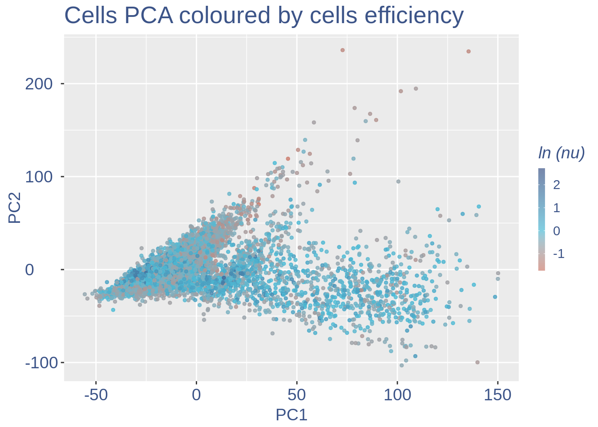 The next part is use to remove the cells with efficiency too low.
nu_df = data.frame("nu"= sort(obj@nu), "n"=c(1:length(obj@nu)))
ggplot(nu_df, aes(x = n, y=nu)) +
geom_point(colour = "#8491B4B2", size=1)+
my_theme #+ ylim(0,1) + xlim(0,70)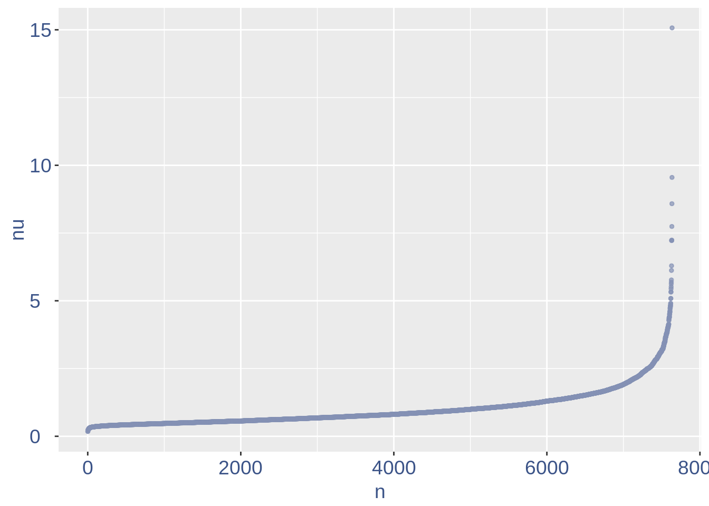
We can zoom on the smalest values and, if we detect a clear elbow, we can decide to remove the cells.
yset = 0.35#threshold to remove low UDE cells
plot.ude <- ggplot(nu_df, aes(x = n, y=nu)) +
geom_point(colour = "#8491B4B2", size=1) +
my_theme + ylim(0.,0.7) + xlim(0,2000) +
geom_hline(yintercept=yset, linetype="dashed", color = "darkred") +
annotate(geom="text", x=500, y=0.5,
label=paste("to remove cells with nu < ",yset,sep = " "),
color="darkred", size=4.5)
pdf(paste(out_dir,"cleaning/",t,"_plots_efficiency.pdf", sep = ""))
plot.ude
#> Warning: Removed 5636 rows containing missing values (geom_point).
dev.off()
#> png
#> 2
plot.ude
#> Warning: Removed 5636 rows containing missing values (geom_point).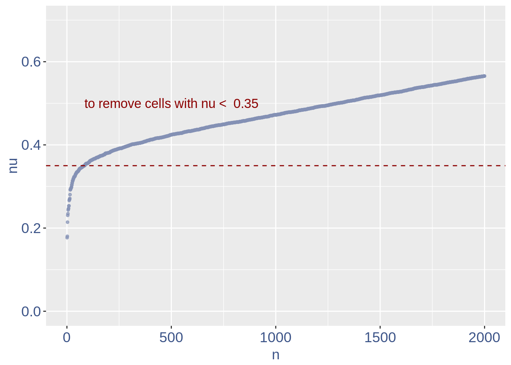 We also save the defined treshold in the metadata and re run the estimation
obj@meta[(nrow(obj@meta)+1),1:2] = c("Threshold low UDE cells:",yset)
to_rem = rownames(nu_df[which(nu_df$nu < yset),])
obj@raw = obj@raw[, !colnames(obj@raw) %in% to_rem]Repeat the estimation after the cells are removed
ttm = clean(obj)
#> [1] "Start estimation mu with linear method"
#> [1] 14382 7554
#> rowname p0-WT2_AAAGTGCTAGCC p0-WT2_GAAGTTAGGGAN p0-WT2_GATCTAGCGTGG
#> 1287 Apoe 277.40779 270.637698 273.898393
#> 12839 Tmsb4x 42.12655 42.389037 62.922604
#> 3169 Ctsd 95.45696 44.019385 7.402659
#> 3167 Ctsb 52.43411 45.649732 11.103989
#> 841 Actb 25.54482 39.128342 43.182179
#> 3127 Cst3 30.02637 37.497994 12.337765
#> 2009 C1qb 17.02988 35.867647 25.909307
#> 2011 C1qc 22.85589 30.976604 25.909307
#> 4784 Fth1 28.23375 9.782085 9.870212
#> 1667 B2m 18.37434 32.606952 18.506648
#> 7102 Lgmn 18.37434 37.497994 8.636436
#> 13273 Tyrobp 18.82250 17.933823 6.168883
#> 7406 Malat1 9.41125 1.630348 11.103989
#> 10672 Rpl13a 12.54833 21.194519 13.571542
#> 11117 Sepp1 12.54833 13.042781 6.168883
#> p0-WT2_GATCTAGCGTGN p0-WT2_GGATCCGCCCAA p0-WT3_AACAGTGCAGAA
#> 1287 229.480218 285.411229 270.247259
#> 12839 67.598824 97.457493 32.923524
#> 3169 5.336749 29.585310 12.346321
#> 3167 7.115666 27.844998 9.602694
#> 841 23.125913 43.507809 16.461762
#> 3127 12.452415 31.325623 27.436270
#> 2009 37.357245 24.364373 20.577202
#> 2011 17.789164 19.143436 17.833575
#> 4784 17.789164 22.624061 17.833575
#> 1667 16.010248 17.403124 10.974508
#> 7102 3.557833 8.701562 10.974508
#> 13273 10.673499 13.922499 15.089948
#> 7406 10.673499 8.701562 12.346321
#> 10672 10.673499 6.961249 19.205389
#> 11117 5.336749 5.220937 9.602694
#> p0-WT3_GCCTTCCTCCGA
#> 1287 227.176931
#> 12839 57.665013
#> 3169 72.758540
#> 3167 56.890986
#> 841 16.254567
#> 3127 37.540311
#> 2009 18.189635
#> 2011 26.703932
#> 4784 22.059770
#> 1667 13.545473
#> 7102 13.545473
#> 13273 17.802622
#> 7406 40.249405
#> 10672 9.288324
#> 11117 41.023432
obj = ttm$object
ttm$pca.cell.2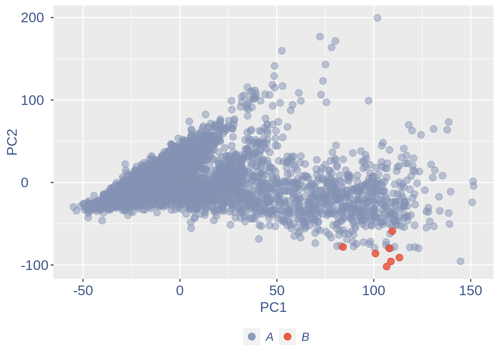
Just to check again, we plot the final efficiency colored PCA
nu_est = round(obj@nu, digits = 7)
plot.nu <-ggplot(ttm$pca_cells,aes(x=PC1,y=PC2, colour = log(nu_est)))
plot.nu = plot.nu + geom_point(size = 2,alpha= 0.8)+
scale_color_gradient2(low = "#E64B35B2",mid = "#4DBBD5B2", high = "#3C5488B2" ,
midpoint = log(mean(nu_est)),name = "ln(nu)")+
ggtitle("Cells PCA coloured by cells efficiency: last") +
my_theme + theme(plot.title = element_text(color = "#3C5488FF", size = 20),
legend.title=element_text(color = "#3C5488FF", size = 14,face = "italic"),
legend.text = element_text(color = "#3C5488FF", size = 11),
legend.key.width = unit(2, "mm"),
legend.position="right")
pdf(paste(out_dir,"cleaning/",t,"_plots_PCA_efficiency_colored_FINAL.pdf", sep = ""))
plot.nu
dev.off()
#> png
#> 2
plot.nu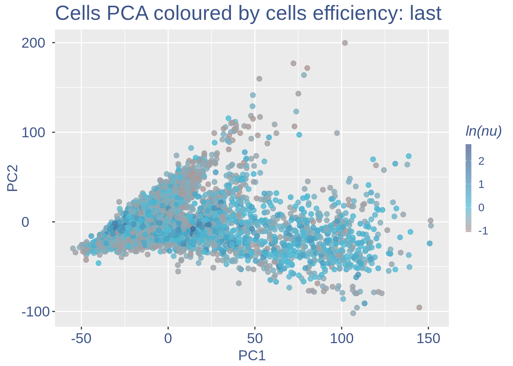 COTAN analysis: in this part all the contingency tables are computed and used to get the statistics (S) To storage efficincy of all the observed tables only the yes_yes is stored. Note that if will be necessary re-coputing the yes-yes table, the yes-yes table should be cancelled before running cotan_analysis.
COEX evaluation and storing
The next function can directly plot the GDI for the dataset with the 1.5 threshold (in red) and the two higher quantiles (in blue).
obj = readRDS(paste(out_dir,t,".cotan.RDS", sep = ""))
plot.GDI(obj, cond = "P0")
#> [1] "GDI plot "
#> [1] "function to generate GDI dataframe"
#> [1] "Using S"
#> [1] "function to generate S "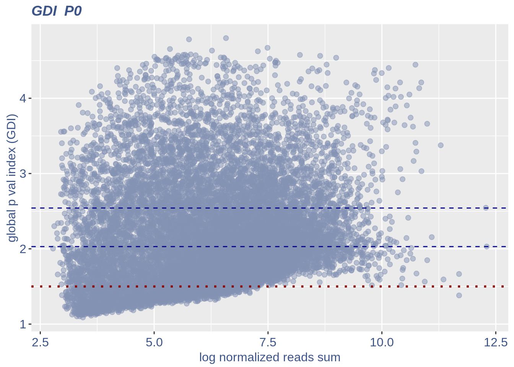
If a more complex plot is needed, or if we want to analize mor in detail the GDI data, we can get direcly the GDI dataframe.
quant.p = get.GDI(obj)
#> [1] "function to generate GDI dataframe"
#> [1] "Using S"
#> [1] "function to generate S "
head(quant.p)In the third column of this dataframe is reported the percentage of cells expressing the gene.
NPGs=c("Nes","Vim","Sox2","Sox1","Notch1", "Hes1","Hes5","Pax6") #,"Hes3"
PNGs=c("Map2","Tubb3","Neurod1","Nefm","Nefl","Dcx","Tbr1")
hk=c("Calm1","Cox6b1","Ppia","Rpl18","Cox7c","Erh","H3f3a","Taf1","Taf2","Gapdh","Actb","Golph3", "Mtmr12", "Zfr", "Sub1", "Tars", "Amacr")
text.size = 12
quant.p$highlight = with(quant.p, ifelse(rownames(quant.p) %in% NPGs, "NPGs",
ifelse(rownames(quant.p) %in% hk,"Constitutive" ,
ifelse(rownames(quant.p) %in% PNGs,"PNGs" , "normal"))))
textdf <- quant.p[rownames(quant.p) %in% c(NPGs,hk,PNGs), ]
mycolours <- c("Constitutive" = "#00A087FF","NPGs"="#E64B35FF","PNGs"="#F39B7FFF","normal" = "#8491B4B2")
f1 = ggplot(subset(quant.p,highlight == "normal" ), aes(x=sum.raw.norm, y=GDI)) + geom_point(alpha = 0.1, color = "#8491B4B2", size=2.5)
GDI_plot = f1 + geom_point(data = subset(quant.p,highlight != "normal" ), aes(x=sum.raw.norm, y=GDI, colour=highlight),size=2.5,alpha = 0.8) +
geom_hline(yintercept=quantile(quant.p$GDI)[4], linetype="dashed", color = "darkblue") +
geom_hline(yintercept=quantile(quant.p$GDI)[3], linetype="dashed", color = "darkblue") +
geom_hline(yintercept=1.5, linetype="dotted", color = "red", size= 0.5) +
scale_color_manual("Status", values = mycolours) +
scale_fill_manual("Status", values = mycolours) +
xlab("log normalized counts")+ylab("GDI")+
geom_label_repel(data =textdf , aes(x=sum.raw.norm, y=GDI, label = rownames(textdf),fill=highlight),
label.size = NA,
alpha = 0.5,
direction ="both",
na.rm=TRUE,
seed = 1234) +
geom_label_repel(data =textdf , aes(x=sum.raw.norm, y=GDI, label = rownames(textdf)),
label.size = NA,
segment.color = 'black',
segment.size = 0.5,
direction = "both",
alpha = 0.8,
na.rm=TRUE,
fill = NA,
seed = 1234) +
theme(axis.text.x = element_text(size = text.size, angle = 0, hjust = .5, vjust = .5, face = "plain", colour ="#3C5488FF" ),
axis.text.y = element_text( size = text.size, angle = 0, hjust = 0, vjust = .5, face = "plain", colour ="#3C5488FF"),
axis.title.x = element_text( size = text.size, angle = 0, hjust = .5, vjust = 0, face = "plain", colour ="#3C5488FF"),
axis.title.y = element_text( size = text.size, angle = 90, hjust = .5, vjust = .5, face = "plain", colour ="#3C5488FF"),
legend.title = element_blank(),
legend.text = element_text(color = "#3C5488FF",face ="italic" ),
legend.position = "bottom") # titl)
legend <- cowplot::get_legend(GDI_plot)
GDI_plot =GDI_plot + theme(
legend.position = "none")
GDI_plot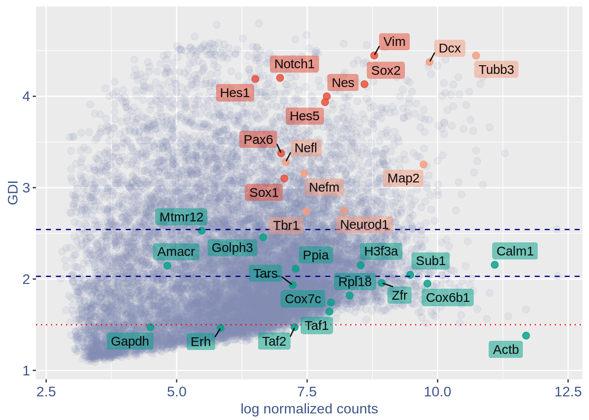
For the Gene Pair Analysis, we can plot an heatmap with the coex values between two genes sets. To do so we need to define, in a list, the different gene sets (list.genes). Then in the function parameter sets we can decide which sets need to be considered (in the example from 1 to 3). In the condition parameter we should insert an array with each file name prefix to be considered (in the example, the file names is “E17.5_cortex”).
list.genes = list("Ref.col"= PNGs, "NPGs"=NPGs, "Const."=hk )
plot.heatmap(df_genes = list.genes,sets = c(1:3),conditions = "P0_cortex",dir = "Data/")
#> [1] "plot heatmap"
#> [1] "Loading condition P0_cortex"
#> [1] "Map2" "Tubb3" "Neurod1" "Nefm" "Nefl" "Dcx" "Tbr1"
#> [1] "Get p-values on a set of genes on columns on a set of genes on rows"
#> [1] "Using function S"
#> [1] "function to generate S "
#> [1] "Ref.col"
#> [1] "NPGs"
#> [1] "Const."
#> [1] "min coex: -0.00402368455132171 max coex 0.00363639659040585"print(sessionInfo())
#> R version 4.0.4 (2021-02-15)
#> Platform: x86_64-pc-linux-gnu (64-bit)
#> Running under: Ubuntu 18.04.5 LTS
#>
#> Matrix products: default
#> BLAS: /usr/lib/x86_64-linux-gnu/openblas/libblas.so.3
#> LAPACK: /usr/lib/x86_64-linux-gnu/libopenblasp-r0.2.20.so
#>
#> locale:
#> [1] LC_CTYPE=en_US.UTF-8 LC_NUMERIC=C
#> [3] LC_TIME=en_US.UTF-8 LC_COLLATE=en_US.UTF-8
#> [5] LC_MONETARY=en_US.UTF-8 LC_MESSAGES=en_US.UTF-8
#> [7] LC_PAPER=en_US.UTF-8 LC_NAME=C
#> [9] LC_ADDRESS=C LC_TELEPHONE=C
#> [11] LC_MEASUREMENT=en_US.UTF-8 LC_IDENTIFICATION=C
#>
#> attached base packages:
#> [1] stats graphics grDevices utils datasets methods base
#>
#> other attached packages:
#> [1] ggrepel_0.9.1 ggplot2_3.3.3 Matrix_1.3-2 data.table_1.13.6
#> [5] COTAN_0.1.0
#>
#> loaded via a namespace (and not attached):
#> [1] Rcpp_1.0.6 lattice_0.20-41 circlize_0.4.12
#> [4] tidyr_1.1.2 png_0.1-7 assertthat_0.2.1
#> [7] digest_0.6.27 R6_2.5.0 stats4_4.0.4
#> [10] evaluate_0.14 highr_0.8 pillar_1.4.7
#> [13] basilisk_1.2.1 GlobalOptions_0.1.2 rlang_0.4.10
#> [16] jquerylib_0.1.3 R.oo_1.24.0 R.utils_2.10.1
#> [19] S4Vectors_0.28.1 GetoptLong_1.0.5 reticulate_1.18
#> [22] rmarkdown_2.7 labeling_0.4.2 stringr_1.4.0
#> [25] munsell_0.5.0 compiler_4.0.4 xfun_0.20
#> [28] pkgconfig_2.0.3 BiocGenerics_0.36.0 shape_1.4.5
#> [31] htmltools_0.5.1.1 tidyselect_1.1.0 tibble_3.0.6
#> [34] IRanges_2.24.1 matrixStats_0.58.0 withr_2.4.1
#> [37] crayon_1.4.0 dplyr_1.0.4 R.methodsS3_1.8.1
#> [40] rappdirs_0.3.3 basilisk.utils_1.2.2 grid_4.0.4
#> [43] jsonlite_1.7.2 gtable_0.3.0 lifecycle_0.2.0
#> [46] DBI_1.1.1 magrittr_2.0.1 scales_1.1.1
#> [49] stringi_1.5.3 farver_2.0.3 bslib_0.2.4
#> [52] ellipsis_0.3.1 filelock_1.0.2 generics_0.1.0
#> [55] vctrs_0.3.6 cowplot_1.1.1 rjson_0.2.20
#> [58] RColorBrewer_1.1-2 tools_4.0.4 Cairo_1.5-12.2
#> [61] glue_1.4.2 purrr_0.3.4 parallel_4.0.4
#> [64] yaml_2.2.1 clue_0.3-58 colorspace_2.0-0
#> [67] cluster_2.1.1 ComplexHeatmap_2.6.2 knitr_1.31
#> [70] sass_0.3.1